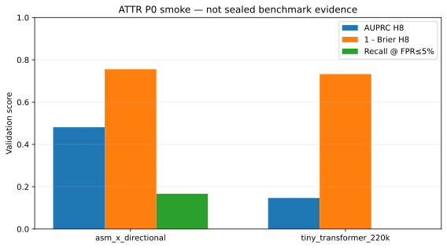
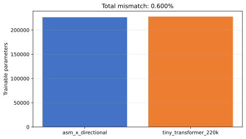

Integration smoke only. These results are not sealed ATTR evidence and support no safety or universal-superiority claim.
Leakage audits: feature=True; split=True; threshold=validation_only.


| Arm | Backbone params | AUPRC H8 | Brier H8 |
|---|---|---|---|
| asm_x_directional | 219,610 | 0.4812 | 0.2449 |
| tiny_transformer_220k | 220,208 | 0.1468 | 0.2678 |